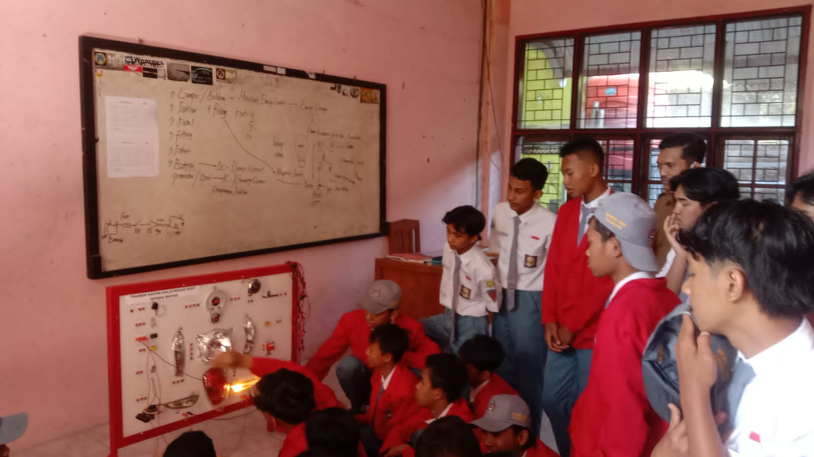

Kembali ke Menu
Teknik dan Bisnis Sepeda Motor
Teknik dan Bisnis Sepeda Motor (TBSM) adalah salah satu cabang ilmu teknik mesin yang mempelajari tentang bagaimana merancang, membuat dan mengembangkan alat-alat transportasi darat yang menggunakan mesin, terutama sepeda motor.

<\video>